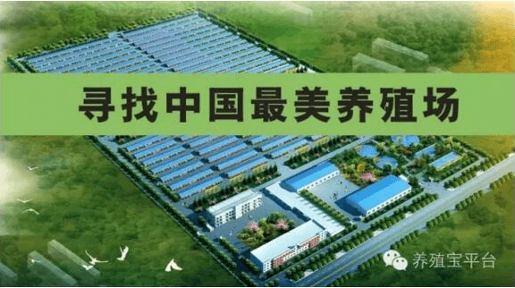
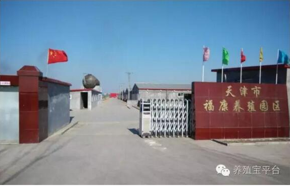
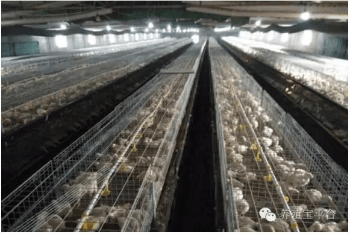
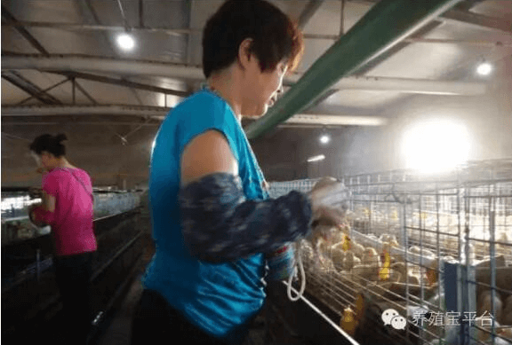
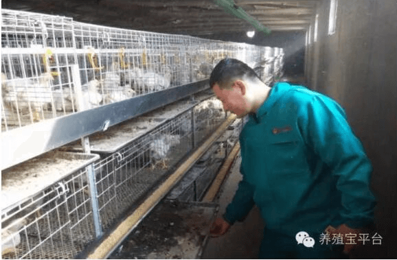
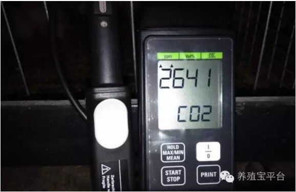
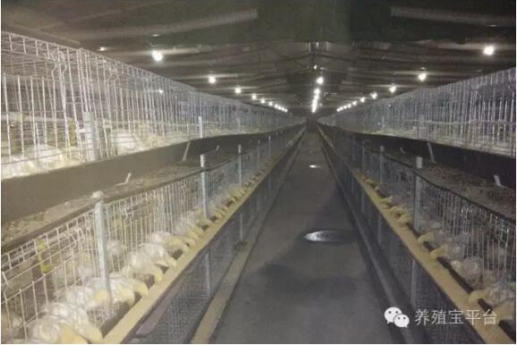
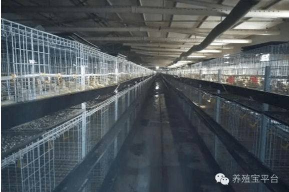
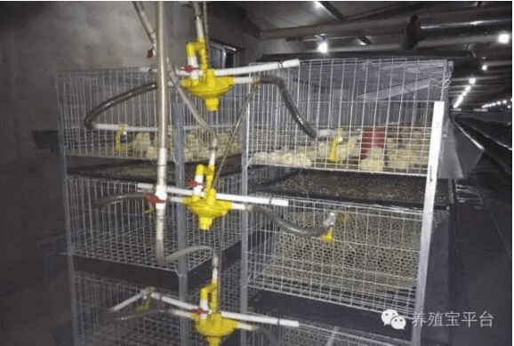

“寻找中国最美养殖场”第三期开幕
由养殖宝主办的“寻找中国最美养殖场”活动在前两期取得初步成效，盛夏来临，活动如火如荼，继续进入第三期。活动期间，养殖宝秉承着“与畜牧人同行，与时代同步”的理念，贯彻传统畜牧业与互联网+紧密结合的发展模式，为众多养殖用户带来了耳目一新的感受，更为他们开启了一扇通向更长远发展道路的大门。
第三期“寻找中国最美养殖场”活动落脚于天津的福康养殖园区内，在这里，我们参观了河北荣达畜禽养殖有限公司天津静海笼养场，并详细采访了养殖场工作人员。
 养殖场大门河北荣达畜禽养殖有限公司天津静海笼养场的场长邱志龙介绍说，养殖场是在2014年10月建场，目前规模已经达到占地50余亩，8栋鸡舍，单舍饲养鸡数量达到2万只，年出栏80多万只，盈利接近200万元。
 养殖场鸡舍全貌  工作人员为饲养鸡注射免疫这样一个大型养殖场的负责人，却是一位标准的“80后”。邱志龙出生于1985年，家在山东临沂，作为一名地道的山东人，在采访中，处处流露出他豪爽实在的性格。
邱志龙曾就读于潍坊畜牧专科学校，毕业后在兽药企业从事了长达八年的兽药业务工作，积累了丰富的养殖从业经验，这为他之后的创业之路奠定了坚实的专业基础。2014年，邱志龙紧抓市场发展的变化，看准时机，创建了肉鸡笼养场，倚靠自身十余年的从业经验，加上他对市场的敏锐把握，养殖场效益一路飙升。
 工作人员检查饲养鸡粪便  齐全的环控设备——二氧化碳检测仪  14天幼鸡第一次分群管理回顾养殖场这几年的发展，有收获亦有坎坷风雨，邱志龙说，通过经营养殖场，他深深感受到了畜牧行业快速的发展变迁，作为传统行业，处在新的市场环境中，需要不断探索新的发展模式。对于“养殖宝”提倡的互联网+畜牧业的模式，邱场长表示了极大认可，他说，养殖的规模化、集约化趋势必将进一步扩大，互联网+的形式将在这个过程中起到关键性作用。在使用“养殖宝”的过程中，他感受到这个平台是在为养殖户搭建一个通向外界的桥梁，把先进技术引进来，让自身优势走出去，堪称是获取养殖经验、把控市场脉搏的“养殖宝典”。
 养殖场鸡舍概况  笼养鸡舍局部概况